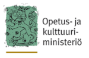

<!-- # This file is part of the research.fi API service
#
# Copyright 2019 Ministry of Education and Culture, Finland
#
# :author: CSC - IT Center for Science Ltd., Espoo Finland servicedesk@csc.fi
# :license: MIT -->

<footer>
  <nav class="footer wrapper">
    <div class="row">
      <div class="col col-3">
        <a href=""></a>
      </div>
      <div class="col col-3">
        <ul>
          <li><a href="#">Tutkija, haluatko omat tietosi tänne?</a></li>
          <li><a href="#">Tutkimustietovarannosta</a></li>
        </ul>
      </div>
      <div class="col">
        <ul>
          <li><a href="#">Tietoa OKM:stä</a></li>
          <li><a href="#">Anna palautetta</a></li>
        </ul>
      </div>
      <div class="col">
        <ul>
          <li><a href="#">Tietosuoja</a></li>
          <li><a href="#">Sivukartta</a></li>
        </ul>
      </div>
      <div class="col">
        <div class="social">
          <ul>
            <li>Seuraa meitä!</li>
          </ul>
          <a href="#"><i class="fa fa-facebook-official"></i></a>
          <a href="#"><i class="fa fa-twitter"></i></a>
          <a href="#"><i class="fa fa-linkedin-square"></i></a>
        </div>
        <div class="build-info pull-right">
          <span>{{buildInfo}}</span>
        </div>
      </div>
    </div>
  </nav>
</footer>